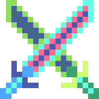

| Entities | Items | Recipes | Magics |
|---|
Daedalus Twinknife

|
|
Daedalus Twinknifecol7f7fff |
DAEDALUS TWINKNIFE is a assassin ranged weapon with id #295. Its rarity value is 5(Proficiency-Made).It is craftable and involves further crafting recipes.
It involves as a material of True Twinblade.
DAEDALUS TWINKNIFE is also a weapon. It deals 100 piercing damage. It acts as a simple ranged assassin knife. It attacks every 11 ticks, i.e 7.27 per second. It's "dashboard" dpm is 727.3.
As Material For:
 True Twinblade 真双刃*1 |
Daedalus Twinknife 代达罗斯双子刀*1 |
 Soul of Integrity 诚实之魂*10 |
 Soul of Bravery 勇气之魂*10 |
 Soul of Kindness 善良之魂*10 |
 Mithrill Anvil 秘银砧*1 |